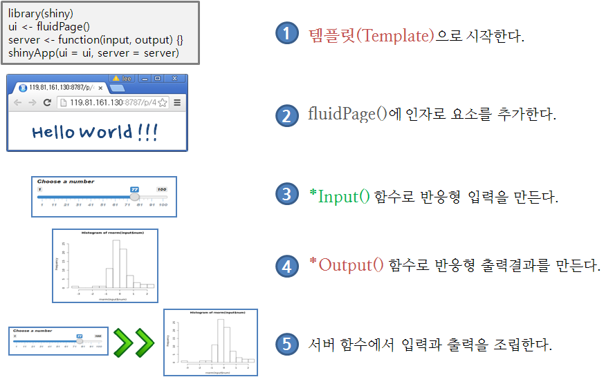
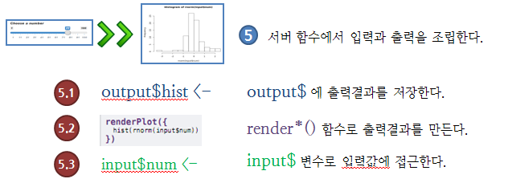

데이터 제품
Shiny 웹앱 개발
학습 목표
- Shiny 기반 간단한 웹앱을 개발한다.
- 전반적인 Shiny 웹앱 개발 흐름을 이해한다.
개괄적인 Shiny 응용프로그램 개발
정규분포에서 표본을 추출해서 히스토그램을 화면에 출력하는 간단한 예제다. 히스토그램 간격(bin)을 조절하는 제어 변수를 추가하고 슬라이더바(Sliderbar) 사용자 인터페이스를 통해 제어한다.

Shiny 응응프로그램 개발 순서

1. 템플릿(Template)으로 시작
library(shiny)
ui <- fluidPage()
server <- function(input, output) {}
shinyApp(ui = ui, server = server)2. fluidPage()에 인자로 요소를 추가
library(shiny)
ui <- fluidPage("Hello World!!! 한글")
server <- function(input, output) {}
shinyApp(ui = ui, server = server)2.1 개발 스텁(stub) 생성
library(shiny)
ui <- fluidPage(
# *Input() functions,
# *Output() functions)
server <- function(input, output) {
# output$
# render*()
# input$
}
shinyApp(ui = ui, server = server)3. Input() 함수로 반응형 입력 생성
library(shiny)
ui <- fluidPage(
sliderInput(inputId = "num",
label = "숫자를 선택하세요 (Choose a number): ",
value = 25, min = 1, max = 100)
)
server <- function(input, output) {
# output$
# render*()
# input$
}
shinyApp(ui = ui, server = server)4. Output() 함수로 반응형 출력결과 생성
library(shiny)
ui <- fluidPage(
sliderInput(inputId = "num",
label = "숫자를 선택하세요 (Choose a number): ",
value = 25, min = 1, max = 100),
plotOutput("hist")
)
server <- function(input, output) {
# output$
# render*()
# input$
}
shinyApp(ui = ui, server = server)5. 서버 함수에서 입력과 출력을 조립

5.1. output$ 화면에 출력할 객체를 저장
output$ 화면에 출력할 객체를 저장한다.
library(shiny)
ui <- fluidPage(
sliderInput(inputId = "num",
label = "숫자를 선택하세요 (Choose a number): ",
value = 25, min = 1, max = 100),
plotOutput("hist")
)
server <- function(input, output) {
output$hist <- # 코드
}
shinyApp(ui = ui, server = server)5.2. render*() 함수로 화면에 출력할 객체를 만듬(build)
library(shiny)
ui <- fluidPage(
sliderInput(inputId = "num",
label = "숫자를 선택하세요 (Choose a number): ",
value = 25, min = 1, max = 100),
plotOutput("hist")
)
server <- function(input, output) {
output$hist <- renderPlot({
})
}
shinyApp(ui = ui, server = server)5.3. input$ 변수로 입력값 접근
library(shiny)
ui <- fluidPage(
sliderInput(inputId = "num",
label = "숫자를 선택하세요 (Choose a number): ",
value = 25, min = 1, max = 100),
plotOutput("hist")
)
server <- function(input, output) {
output$hist <- renderPlot({
title <- "정규분포 난수 100개 값 분포"
hist(rnorm(input$num), main = title)
})
}
shinyApp(ui = ui, server = server)
Shiny 응응프로그램 저장
app.R을 포함하는 디렉토리를 생성하고, 데이터셋, 이미지, css, 도움말 등을 함께 저장한다. /srv/shiny-server/ 디렉토리가 Shiny 서버 응용프로그램을 배포하는 디렉토리다.
shinyapp.io 배포
https://www.shinyapps.io/에 Shiny 응용프로그램을 배포하려면 app.R로 한통으로 개발한 프로그래믕ㄹ 두개 ui.R, server.R로 분리한다.
| # ui.R
library(shiny) | library(shiny)
ui <- fluidPage( | fluidPage(
sliderInput(inputId = "num", | sliderInput(inputId = "num",
label = "숫자를 선택하세요 | label = "숫자를 선택하세요
(Choose a number): ", | (Choose a number): ",
value = 25, min = 1, max = 100), | value = 25, min = 1, max = 100),
plotOutput("hist") | plotOutput("hist")
) | )
|
| # server.R
| library(shiny)
server <- function(input, output) { | function(input, output) {
output$hist <- renderPlot({ | output$hist <- renderPlot({
title <- "정규분포 난수 100개 값 분포" | title <- "정규분포 난수 100개 값 분포"
hist(rnorm(input$num), main = title) | hist(rnorm(input$num), main = title)
}) | })
} | }
|
shinyApp(server = server, ui = ui) |